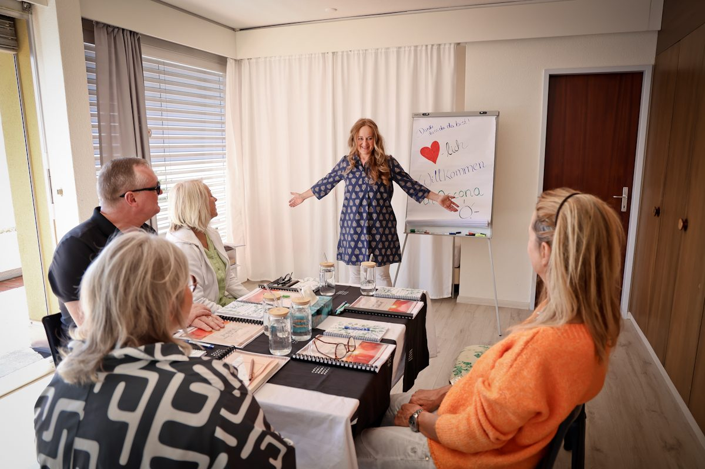
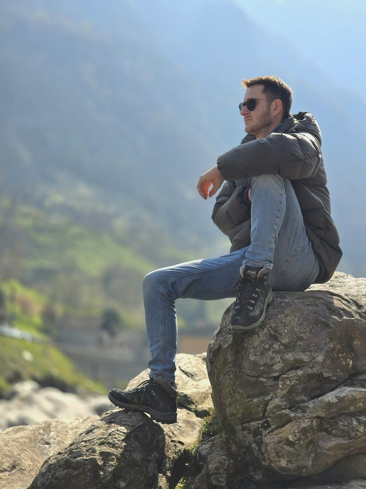
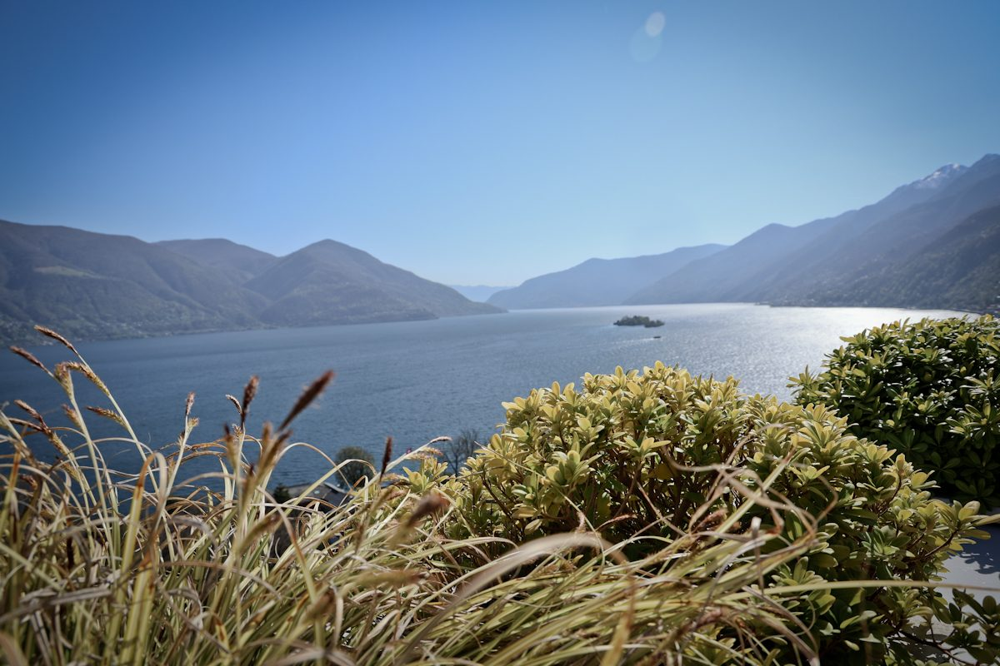
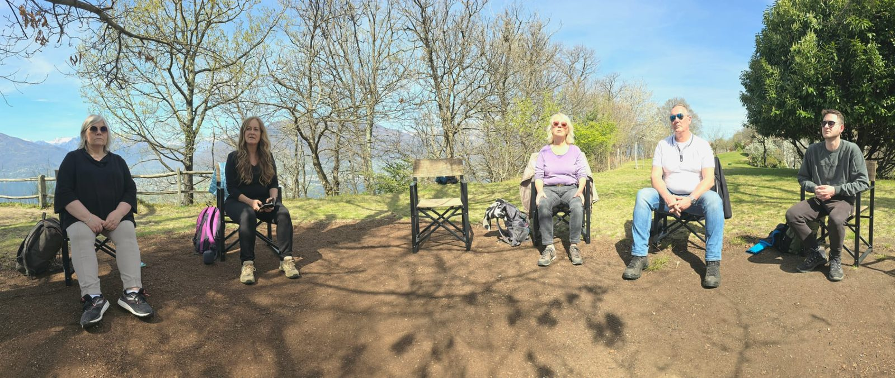

5-Tage-Retreat am
Lago Maggiore
Fünf intensive Tage an einem der schönsten Orte Europas – für tiefgreifende innere Veränderung in einer kleinen, wertschätzenden Gruppe.

Ein Ort für echte Veränderung
Ascona am Lago Maggiore ist kein zufälliger Ort. Die Natur, das Wasser, die Stille – all das unterstützt den inneren Prozess auf eine Weise, die in einem gewöhnlichen Alltag selten möglich ist. Fünf Tage lang bist du vollständig aus deinem Alltag herausgelöst. Das ist Absicht.
In dieser Zeit geschieht etwas: Der Geist entspannt sich. Das Herz öffnet sich. Und das, was lange im Verborgenen lag, kann endlich auftauchen – sanft, sicher und begleitet.
Was dich erwartet
Das Retreat erstreckt sich über fünf volle Tage – von morgens bis abends. Jeder Tag ist durchdacht und begleitet:
- Ganzheitliche Begleitung von Silvia von morgens bis abends
- Individuelle und Gruppenarbeit zu tiefen inneren Themen
- Arbeit an Mustern, Ängsten, schnellen Verletzlichkeiten und inneren Blockaden
- Energetische Heilarbeit und Bewusstseinsübungen
- Raum für Stille, Natur, Reflexion und persönliche Integration
- Austausch in einer kleinen, wertschätzenden Gruppe
Die Gruppe – klein und wertvoll
Maximal 8 Personen nehmen am Retreat teil. Diese kleine Gruppengröße ist bewusst gewählt: Sie ermöglicht echten Kontakt, tiefes Vertrauen und individuelle Aufmerksamkeit für jeden Teilnehmer. Es entstehen Verbindungen, die oft lange nach dem Retreat weitergetragen werden.
Themen, die wir im Retreat berühren
- Ängste und Schutzstrategien – was dahinter liegt
- Muster, die sich immer wiederholen
- Schnelle Verletzlichkeit und innere Empfindlichkeit
- Tiefe Erschöpfung und innere Leere
- Verbindung zu dir selbst – wer bist du wirklich?
Einblicke aus dem Tessin
Momente aus echten Retreat-Tagen am Lago Maggiore.







Für wen ist das Retreat?
- Für Menschen, die spüren, dass sie mehr als ein Wochenende brauchen
- Für alle, die sich in der Stille des Alltags verloren haben
- Für Menschen, die tiefgreifende Themen in einem geschützten Rahmen angehen möchten
- Für Unternehmer, Eltern und Führungspersönlichkeiten, die sich endlich erlauben möchten, loszulassen
Dein Platz am Lago Maggiore
Für Menschen, die bereit sind für echte Veränderung. Lass uns sprechen.
Termine montags · Begrenzte Plätze · Vertraulich